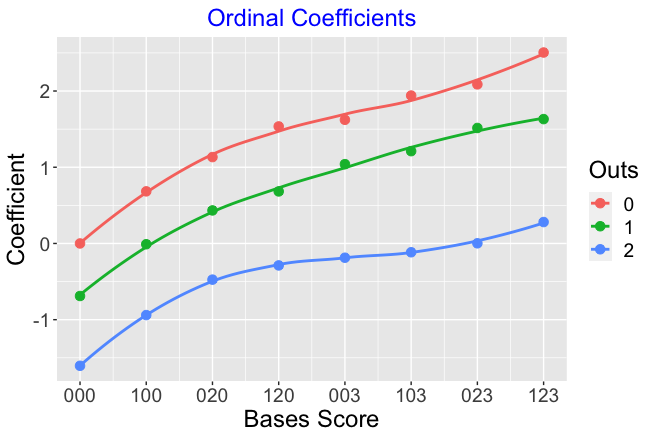
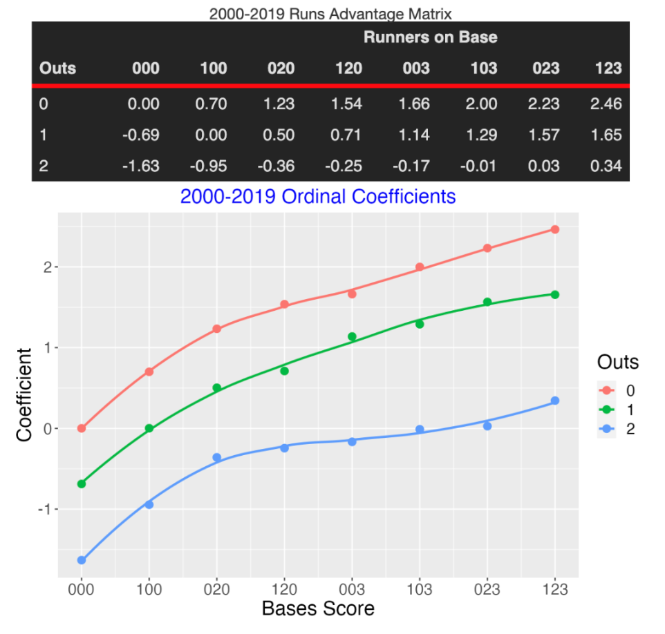

Runs Expectancy
1 Introduction
This document contains several articles from the “Exploring Baseball Data with R” blog on the general topic of runs expectancy which is a central topic in sabermetrics.
Section 2 describes the process of downloading play-by-play Retrosheet data for a specific season. Another function is helpful for computing the runs values for all of the plays that season.
Section 3 discusses the runs expectancy matrix which can be used to evaluate values of plays and different strategies during a game. This section describes the use of a graph to summarize the main patterns of this matrix.
A popular modern way to evaluate batting performance is the weighted on-base percentage or wOBA. We explain in Section 4 how to use Retrosheet play-by-play data to compute the weights of the different positive outcomes that are used in the wOBA.
Runs values are also helpful in evaluating pitches. Section 5 describes the concept of a pitch value and shows the value of different types of pitches over the zone.
One drawback of the runs expectancy matrix is that runs potential is measured solely by the mean runs in the remainder of the inning. Section 6 introduces a more general approach where runs are represented as an ordinal variable and one measures the advantage of a given situation by use of an ordinal regression model. Section 7 provides some background material on this ordinal response approach. This section provides some interesting comparisons between the runs expectancy table and the “runs advantage” table which displays the ordinal regression coefficient for all states.
2 Getting Started
2.1 Downloading Retrosheet Data
Here’s an outline of how to download the Retrosheet play files for a particular season.
There is a blog posting on this at https://baseballwithr.wordpress.com/2014/02/10/downloading-retrosheet-data-and-runs-expectancy/
Download the Chadwick files following the advice from the website mentioned on the blog post – this will parse the original source files.
I set up the current working director to have the following file structure.

- I download the R function
parse.retrosheet2.pbp.R()from my gist site.
library(devtools)
source_gist("https://gist.github.com/bayesball/8892981",
filename="parse.retrosheet2.pbp.R")- Now I am ready to download the Retrosheet play-by-play data for the 2021 season.
parse.retrosheet2.pbp(2021)- Two new files “all2021.csv” and “roster.csv” are stored in the “download.folder/unzipped” folder. Using the
read_csv()function I read in the play-by-play data.
library(readr)
d2021 <- read_csv("download.folder/unzipped/all2021.csv",
col_names = FALSE)- Last I want to add variable names to the header of the data file. I read a header file from our Github site and use this to assign the variable names.
fields <- read.csv("https://raw.githubusercontent.com/beanumber/baseball_R/master/data/fields.csv")
names(d2021) <- fields[, "Header"]- The data frame
d2021is ready to explore. Here is the first row of the file.
d2021[1, ]2.2 Computing the Runs Values
Once the Retrosheet play-by-play data is downloaded, then the function compute.runs.expectancy() will compute the runs values for all plays.
One can download this function from the Github Gist site.
library(devtools)
source_gist("https://gist.github.com/bayesball/8892999",
filename="compute.runs.expectancy.R")Assuming the file “all2021.csv” is stored in the working directory, the following command will read in the csv file, compute the runs values and store the resulting data frame as `d2021’.
d2021 <- compute.runs.expectancy(2021)The following command will output the current state STATE, the new state NEW.STATE and the RUNS.VALUE for the first few plays in the season file.
library(dplyr)
d2018 %>%
select(STATE, NEW.STATE, RUNS.VALUE) %>%
head()3 Summarizing a Runs Expectancy Matrix
3.1 Introduction
A basic object in sabermetrics research is the Runs Expectancy Matrix that gives the mean number of runs scored in the remainder of the inning for each possible state (number of outs and runners on base) of a half-inning. This FanGraphs page provides a general description of this matrix and why it is so useful in baseball analyses. Chapter 5 of Analyzing Baseball With R describes how to construct this matrix from Retrosheet data and illustrates the use of this matrix to measure the values of plays. Here is the matrix for the 2019 season. For example, reading the “1 out, 023 runners” entry, this says that, on average, there will be 1.42 runs scored in the remainder of the inning when there is 1 out and runners on 2nd and 3rd.
I am interested in exploring how the values in this matrix have changed over twenty seasons of Major League Baseball. Since the nature of run scoring has changed dramatically during the Statcast Era (due to the increasing count of home runs), I would think that this matrix would be changing in interesting ways.
If we focus on the top left entry (000 with no outs) of the matrix, this graph shows how the runs expectancy for this situation has changed in the 20-year period from 2000 to 2019. We see a decline in average run production from 2006 to 2014 followed by a steady rise in the Statcast era from 2015 to 2019.

To see the changes in the expectancy matrix over this period, I thought it would be helpful to summarize this matrix by use of a few numbers. If this could be done, it would facilitate comparisons across seasons. Here I present an attractive way to visualize and summarize the values in this 3 by 8 runs matrix.
3.2 Basic Pattern
If you look at the runs expectancy matrix, note that I have arranged the runners on base values so that for a specific row (number of outs) the run values increase from left to right. What is the nature of this increase? Let’s define a Bases Score equal to the sum of bases occupied plus one if there is more than one runner on base, that is
Bases Score = Sum(bases occupied) + I(# of Runners > 1)
where I() is the indicator function (1 if the argument is true and 0 otherwise). The Score values will go from 0 to 7 corresponding to the 8 columns of the matrix. Let’s graph the run values in the matrix as a function of the Score and fit a line to the points for each number of outs. Interestingly, we see three linear relations that appear to be a good fit to this data.
I have a data frame RE with three variables – Runs, Score (numeric) and Outs (categorical). To find the equations of these three lines, I fit a linear model to Runs where there is an interaction between Score and Outs. This model allows for varying intercepts and varying slopes among the three values of Outs.
fit <- lm(Runs ~ Outs * Score, data = RE)3.3 Interpreting the Fit
This fit provides intercepts and slopes for the three fitted lines corresponding to the three Outs values.
## Outs Intercept Slope
## 1 0 0.64 0.24
## 2 1 0.35 0.18
## 3 2 0.13 0.08The intercepts give estimates of the Runs when there are no runners on base (Score = 0). With the bases empty, we expect the team will score 0.64, 0.35, and 0.13 runs with 0, 1, and 2 outs, respectively.
The slopes give the increase in Runs when the Score value increases by one. When there are no outs, each unit increase in Score will increase the expected Runs by 0.24. So if a runner on first successfully steals second with no outs, the Score increases by one and the Runs increases by 0.24. Suppose there is a runner on 1st with no outs and there is a walk. One is transitioning from the 100 state (Score = 1) to 120 state (Score = 4) and so the Runs would increase by 3 (0.24) = 0.72.
Similarly, when there is one out, there will be a 0.18 increase in Runs for each unit increase in Score, and when there are two outs, there will be a 0.08 increase in Runs for each unit increase in Score. So for example, a walk with a runner on 1st, two outs, will increase the Runs by 3 (0.08) = 0.24.
The fitted slopes clearly shows the effect of outs on run scoring. An event that improves the bases situation has more runs impact with 0 outs compared to one or two outs.
3.4 Examining the Residuals
Of course, these lines don’t provide a perfect fit, and so we’re interested in exploring the vertical deviations (the residuals) for additional insight. Here I plot the residuals as a function of the Score using different colors for the Outs values. What do I see?
Although the sizes of the residuals are small relative to the fitted values, there is a clear pattern – NEGATIVE (bases empty), POSITIVE (one runner), NEGATIVE (two runners), POSITIVE (bases loaded). I could remove this general pattern with a more sophisticated fit, but I would lose the simple interpretation of the linear fit.
There are some interesting large residuals, 000 with no outs (LARGE NEGATIVE), 003 with 0 or 1 out (LARGE POSITIVE), and 120 with one out (LARGE NEGATIVE). Since there are multiple ways to advance a runner on 3rd with less than 2 outs (sac fly, wild pitch or passed ball), I am not surprised about the large positive residuals for 003 with 0 or 1 out. Perhaps the multiple ways to get outs in the 120 situation account for the large negative residual.
3.5 Using this Summary
Sometime next year, I’ll post something related to run production in the last 20 years of baseball. But here are some thoughts about these summaries of the runs expectancy matrix.
The Slopes. The main takeaway are the slopes 0.24, 0.18, and 0.08 which give the improvement in expected runs for each increase in the Bases Score variable. These are easy to remember and can be used in game situations. Suppose a manager wants to quickly compute the run value of a double that scores a runner on first with one out. The runners state has changed from 100 to 020 – since the change in Bases Score is 1, there is an advantage of 0.18 runs. Adding that to the single run scored, the runs value of this particular double is 0.18 + 1 = 1.18.
Comparing Seasons. We have summarized the runs expectancies by six numbers – the three intercepts and the three slopes. One can compare run scoring of two seasons by comparing the intercepts or by comparing the slopes. We did illustrate comparison of average run scoring across twenty seasons which is a comparison of the intercepts with no outs.
Impact of HR Hitting? One question is how the home run hitting impacts the run expectancy matrix. For example, if a team is really focusing on hitting home runs, what is the advantage of moving a runner from first to second? This is a question related to the slope summaries.
Beyond Mean Runs. It would also be interesting to see how home run hitting affects other metrics such as the probability of scoring from a given state. Some years ago, I wrote a paper “Beyond Runs Expectancy” published in the Journal of Sports Analytics that looked at distributions of run scoring and how they change across different situations.
4 Computing the wOBA Weights
4.1 Introduction
We start with the definition of \(wOBA\) as given on the FanGraphs web site.
\[ wOBA = \frac{w_1 uBB + w_2 HBP + w_3 1B + w_4 2B + w_5 3B + w_6 HR}{AB + BB - IBB + SF + HBP} \]
There are several features of this formula:
The weights \(w_1, ..., w_6\) are proportional to their runs values.
Note that the denominator includes all batting plays with the exception of intentional walks (\(IBB\)). Note that the outcome “out” does not appear in the numerator. Implicitly, this means that the weights for all “out” events are equal to zero.
To be similar to the \(OBP\) formula, we will see that we need to bump our weights so that the value assigned to the out outcome is zero.
In addition, there is a scaling factor to include so that the average \(wOBA\) value is equal to the average \(OBP\) across all players in the given season.
4.2 Runs Expectancy Matrix
To describe the process of obtaining the weights in the \(wOBA\) formula, we begin by finding the runs expectancy matrix.
A state of an half-inning consists the number of outs and the runners on base. Since there are three possible outs (0, 1, 2) and eight possible configurations of runners on base (each base can be occupied or not), there are 3 \(\times\) 8 = 24 possible states. For each state, we find the average number of runs scored in the remainder of the half-inning. If we do this for all states, we obtain the runs expectancy matrix.
Here is this matrix using all plays from the 2022 season:
000 001 010 011 100 101 110 111
0 0.477 1.231 1.092 2.000 0.863 1.765 1.443 2.396
1 0.256 0.973 0.672 1.398 0.505 1.147 0.901 1.524
2 0.097 0.378 0.306 0.548 0.207 0.500 0.436 0.7684.3 Runs Value of Play
For any batting play, there are two states:
- \(STATE_0\), the state of the inning when the hitter comes to bat
- \(STATE_1\), the state of the inning after the batting play
The runs value (\(Value\)) of the batting play is defined as the difference in the runs value of the two states plus the runs scored on the play (\(RUNS\)).
\[ Value = Runs(STATE_1) - Runs(STATE_0) + RUNS \]
Using this formula, we can compute the value of all batting plays in the 2022 season.
4.4 Runs Value of an Outcome
Suppose we are interested in the runs value of a particular batting outcome, say a home run. We average the runs values for all home runs hit in the 2022 season. We obtain the value of a home run hit in 2022 is 1.4. This likely seems small, but most home runs are hit with no runners on base and even when there are men on base, the runs value of the after state (bases are empty) will be smaller than the runs value of the state with runners on base.
4.5 Computing the Weights
In a similar fashion, we can compute the runs value for all six events (unintentional walk, hit-by-pitch, single, double, triple, home run) and we obtain the following weights. The table gives the name of each event with the corresponding value of the variable EVENT_CD in the Retrosheet dataset.
Event EVENT_CD Weight
<chr> <int> <dbl>
1 uBB 14 0.316
2 HBP 16 0.347
3 1B 20 0.458
4 2B 21 0.770
5 3B 22 1.02
6 HR 23 1.40 4.6 Bump the Weights So that Outs Have a Value of Zero
Actually, we can compute the runs value of all outcomes of a plate appearance. In particular, we note that outs have a value of \(-0.26\). Since the value of outs is 0 in the definition of OBP, we want to adjust all of our event values so that out has a value of 0. We do this adjustment by adding 0.26 to the values of the six events, obtaining the new weights displayed below.
Event EVENT_CD Weight
<chr> <int> <dbl>
1 uBB 14 0.576
2 HBP 16 0.607
3 1B 20 0.718
4 2B 21 1.03
5 3B 22 1.28
6 HR 23 1.66 4.7 Scaling wOBA
Last, we want to rescale the \(wOBA\) value so the the mean \(wOBA\) matches the mean on-base percentage \(OBP\).
By applying the \(wOBA\) formula to all batting plays, we obtain
\[ Mean(wOBA) = 0.2521 \]
Since the average \(OBP\) for all players in the 2022 season is .310, our adjusted \(wOBA\) is given by
\[ wOBA_{adj} = \frac{0.310}{0.2521} wOBA. \]
With this adjustment, we obtain the following new weights.
Event EVENT_CD Weight adj_Weight
<chr> <int> <dbl> <dbl>
1 uBB 14 0.576 0.708
2 HBP 16 0.607 0.747
3 1B 20 0.718 0.883
4 2B 21 1.03 1.27
5 3B 22 1.28 1.57
6 HR 23 1.66 2.05For comparison, I have added the 2022 wOBA weights as reported on the FanGraphs website.
Event EVENT_CD Weight adj_Weight FanGraphs
<chr> <int> <dbl> <dbl> <dbl>
1 uBB 14 0.576 0.708 0.689
2 HBP 16 0.607 0.747 0.72
3 1B 20 0.718 0.883 0.884
4 2B 21 1.03 1.27 1.26
5 3B 22 1.28 1.57 1.60
6 HR 23 1.66 2.05 2.07 Note that our adjusted weights agree pretty closely with the FanGraphs weights. There are small discrepancies, but essentially we have reproduced the FanGraphs wOBA formula from the raw Retrosheet data.
5 Visualizations of Pitch Value
5.1 Introduction
In last week’s post, we explored pitch decisions and the influence of the count on those decisions. For example, pitchers are most likely to throw off-speed pitches when they are ahead in the count. Also, the location of the pitch depends on the count. For example, on a 0-2 count, it is common for a pitcher to throw a low off-speed pitch or a high fastball. In contrast, when the pitcher is behind in the count, he is likely to throw a fastball in the middle of the zone. By use of density estimate graphs, we saw some interesting pitch location patterns for individual pitchers.
Here we focus on the outcome of the pitch and how that outcome varies as a function of the pitch location. From the pitcher’s perspective, there are different ways to think about a desirable pitch outcome. During the plate appearance, the pitcher gains with a pitch resulting in an additional strike or loses with a pitch resulting in an additional ball. A pitch that ends the plate appearance with a strikeout or other out is a gain and a pitch that is put in-play for a hit is a loss for the pitcher. One way of measuring a desirable pitch outcome is by use of expected runs, specifically the runs gained (on average) from that pitch. We’ll review some of the material from the “Balls and Strikes Effects” chapter of Analyzing Baseball with R. Then we’ll use that material together with information about the runs value of different end-of-PA events to define pitch values. Once we have assigned a value to each pitch during the 2019 season, we can use graphs of a smoothed fit to understand the locations of the regions about the zone where a particular type of pitch is effective.
5.2 Review of Balls and Strikes Effects
In Chapter 6 of ABWR we explain how to measure balls and strikes effects. Using Retrosheet play-by-play data, we first compute (from Chapter 5 work) the runs value for each plate appearance outcome that changes the state (runners on base, number of outs and runs scored). Next, we define variables c01, c10, c11, etc. that indicate if the count for a plate appearance passes through the respective counts 0-1, 1-0, 1-1, etc. By averaging the run values over each of these indicator variables, we obtain the mean run value passing through each possible count. I’ve displayed these mean run values in the following figure using 2019 season data – these are similar to the values displayed in ABWR, Figure 6.2 from data from an earlier season.

We also can compute the runs value of each possible end-of-PA event (out, single, walk, HBP, strikeout, etc) by averaging the run values. We learn for example, that an out loses on average 0.28 runs and a single and home run, gain on average 0.46 and 1.38 runs, respectively. Note that these run values are averages and don’t depend on the current situation of runners and outs.
5.3 Pitch Value
Once we’ve computed the runs value for each possible count and each end-of-PA event, then the value of a pitch is simply the change in runs value
Pitch Value = Runs Value (new count or end of PA event) - Runs Value (old count).
For example, suppose the count is 1-1 and the pitcher throws a ball, changing the count to 2-1. The value of that pitch (using numbers from the above figure) is
Value = Runs Value (2-1) - Runs Value (1-1) = 0.035 - (-0.015) = 0.050
Here a pitch adding a ball has a runs value of 0.05 favorable to the hitter. Suppose a batter hits a home run on an 0-2 pitch. The value of this pitch is
Value = Runs Value (HR) - Runs Value (0-2) = 1.38 - (-0.103) = 1.48.
Note that the pitch value of this home run exceeds the average HR runs value since the home run was hit on a 0-2 pitch.
5.4 Graph of Pitch Values
Now that we have assigned values to all pitches, we are interested in seeing how the pitch value varies across the zone. I have already illustrated the use of the CalledStrike package in an earlier post to display patterns of smoothed fits of different batting measures, say launch speed or swinging rates, and so it is straightforward to use similar functions to display patterns of smoothed pitch values over the zone. Basically, one fits a generalized additive model where the pitch value is represented as a smooth function of the plate_x and plate_z variables, one uses the fitted model to predict the pitch value over a grid, and then graphs the fitted values by a filled contour graph.
Usually we think of desirable pitch locations from the pitcher’s perspective. So we will consider the negative of the runs values, so a positive pitch value is advantageous to the pitcher. The values of the two pitches above (a ball on a 1-1 count) and a home run on a 0-2 pitch will be recoded as -0.050 and -1.48 respectively. The color scheme in the plots below will be orange for locations desirable for the pitcher and yellow for locations desirable to the hitter.
5.5 Values of Four-Seamers
To begin, here is a contour graph display of the smoothed pitch values of all four-seam fastballs thrown in the 2019 season. Since the pattern of the values depends on the pitcher and batter sides, there are four displays, one for each combination of sides. Orange indicates a region advantageous to the pitcher and yellow indicates an advantage to the hitter. For a left-handed hitter (left side of the graph), for pitchers of both sides we see that a fastball is beneficial outside and high. We see a similar pattern of orange (high and outside) for right-handed hitters. It is interesting that southpaws also seem to have positive value for fastballs thrown inside to right-handed hitters. Clearly it is not desirable to throw a fastball in the middle of the zone.
5.6 Values of Sliders
Here is a similar display for all sliders thrown by both sides of pitcher to both sides of batter. A right-handed pitcher (bottom row) wants to throw the slider to the outside, either low outside or high outside. For southpaw pitchers (top row), they want to throw their sliders outside to left-handed hitters and high outside to right-handed hitters. It is interesting that there appears to be some advantage for a leftie to throw low and inside to a right-handed hitter.

5.7 Values of Changeups
Here is a visual display of the pitch values of changeups. Generally effective changeups are ones that are low and outside. Looking at the right-right confrontation (bottom-right), note the large white circle in the middle indicating that poorly located sliders tend to have negative consequences.

5.8 R Work?
I have outlined all of my work creating the pitch values and graphing the smoothed values over the zone on my Github Gist site. There are several new functions in the CalledStrike package – the function compute_pitch_values() will compute the pitch values for a Statcast dataset and the function pitch_value_contour() will produce the type of filled contour plots shown here.
5.9 Further Reading on Pitch Value
The notion of pitch value has been around awhile in sabermetrics so there is a good literature on the subject. Here are some older references that I found including the first one by my ABWR coauthor Max (by the way, there is a graph in Max’s post of pitch values of sliders that resembles the one presented here).
Pitch Run Value and Count by Max Marchi, The Hardball Times
Searching for the Game’s Best Pitch by John Walsh, The Hardball Times
Pitch Type Linear Weights by Steve Slowinski, FanGraphs
Run Value by Pitch Location by Dave Allen, The Baseball Analysts
6 Beyond Runs Expectancy
6.1 Introduction
We begin by displaying the well-known runs expectancy table (data from the recent 2022 season) introduced by George Lindsey in 1963. It gives the average runs scored in the remainder of the inning for each situation defined by runners on base and number of outs.
This table provides the foundation for the development of many measures of performance such as wOBA. However, it always has seemed a bit unsatisfying to me since it provides an incomplete view of run scoring potential. For example, when there is a single out and runners on 2nd and 3rd, we see from the table that teams will score an average of 1.42 runs. But this is only an average and does not directly inform us on the probability of not scoring or the probability of scoring 2 or 3 runs. It seems better to describe runs potential in a way that would say more about the future distribution of runs scored than just the mean.
Some years ago, I wrote a paper Beyond Runs Expectancy published in the Journal of Sports Analytics which models run scoring in a different way. Instead of focusing only on the average runs scored, I broke runs scored into the following 5 categories:
0 runs, 1 run, 2 runs, 3 runs, 4 or more runs
Then I used a popular regression model for ordinal outcomes to explore how run scoring differs between teams and how run scoring changes with respect to various situational effects like home vs away, runners on base, and so on. In this post, the plan is to introduce this modeling method and show how one can replace the runs expectancy table with a similar table (that I call a Runs Advantage Table) that gives us more information about the potential for scoring runs.
6.2 Runs Scored in a Half-Inning
We treat the runs scored as an ordinal variable and compute logits to describe changes in the runs scored probabilities as we move from one category to another.
Using 2022 season data, I collect the runs scored in the remainder of the inning in the situation where we have bases empty with no outs. From the following table, we see that in this situation, there were no runs scored in 73.4% of innings, 1 run scored in 14.3% of the innings and so on.
O_RUNS.ROI n Proportion
0 33073 0.734
1 6421 0.143
2 3091 0.069
3 1423 0.032
4+ 1050 0.023For each outcome, we compute a logit defined as the log of the ratio of the fraction less than or equal to the outcome to the fraction larger than the outcome.
\[ Logit = \log\left(\frac{frac \, outcome \, or \, smaller}{frac \, larger \, than \, outcome}\right) \] So for the “0” outcome, we compute
\[ Logit = \log\left( \frac{.734}{.143 + .069 + .032 + .023}\right), \] for the “1” outcome, we compute
\[ Logit = \log\left( \frac{.734 + .143 }{.069 + .032 + .023}\right), \]
If we do this for all five outcomes we get the following table.
O_RUNS.ROI Percent smaller larger Logit
0 0.734 0.734 0.266 1.015
1 0.143 0.877 0.123 1.960
2 0.069 0.945 0.055 2.846
3 0.032 0.977 0.023 3.736
4+ 0.023 1.000 0.000 InfWe call the values in the Logit column boundary values – on the logit scale, they divide the probabilities of the 0, 1, 2, 3 outcome categories.
6.3 Comparing Runs Scored Between Two Situations
Suppose now that we have runners on 1st and 2nd with no outs. There is more potential to score runs in this situation than in the “no runners, no outs” situation. How do we measure this advantage?
We fit an ordinal logistic regression model to measure the changes in the logits dividing the “smaller” and “larger” categories of run scored.
The model says that the logit of “smaller” in category \(k\) is equal to a boundary value \(a_k\) minus an effect \(\eta\) due to the new situation.
\[ logit P(smaller) = a_k - \eta \]
We fit this model using the polr() function in the MASS package.
polr(O_RUNS.ROI ~ 1 + STATE,
data = filter(d2022, STATE %in% two_states))
Coefficients:
STATE110 0
1.557154
Intercepts:
0|1 1|2 2|3 3|4+
1.016599 1.956651 2.817440 3.704878 The “Intercepts” in the R output are familiar – these are just the boundary logit values that we found between the different run categories. The coefficient estimate is \(\eta = 1.557\) – this is the advantage of the “110 0” situation over the “000 0” situation on the logit scale.
For any runs value \(k\) and runners on 1st and 2nd with no outs. \[ logit P(category \, k \, or \, smaller) = a_k - 1.557 \] By construction, for the bases empty and no outs situation \[ logit P(category \, k \, or \, smaller) = a_k \] so the advantage of the new situation is 1.557.
It is probably easiest to understand this fit when expressed in terms of the runs probabilities. I display the fitted probabilities for the two states below. With this more advantageous runners on base situation, the chance of not scoring has dropped from 0.734 and 0.368 and the chance of a “big” inning (4 runs or more) has climbed from 0.024 to 0.105.
State
000 0 110 0
0 0.734 0.368
1 0.142 0.231
2 0.067 0.181
3 0.032 0.116
4+ 0.024 0.1056.4 Advantage in All Situations
We can repeat this exercise for all situations defined by runners on base and number of outs. Using the polr() function we just fit the model
O_RUNS.ROI ~ 1 + STATEThe output of the fit are coefficients that give the advantage of each of the 24 states relative to the “bases empty, no outs” state.
6.5 A New Table
By letting runs scored be an ordinal response and fitting an ordinal logistic model, we obtain a new table of regression coefficients (called a Runs Advantage Table) that gives the advantage of a new situation over the “000 0” state.
RUNS ADVANTAGE TABLE
000 100 020 120 003 103 023 123
0 0.00 0.68 1.13 1.54 1.62 1.94 2.09 2.51
1 -0.69 -0.01 0.43 0.68 1.04 1.21 1.52 1.63
2 -1.60 -0.94 -0.47 -0.29 -0.19 -0.12 0.00 0.28To make sense of this new table …
- Remember, by model definition the “000 0” state has a value of run advantage 0. Negative run advantage values correspond to runner/outs states that are worse (in terms of scoring runs potential) then the “000 0” state. Positive values (like the “120 0” state) correspond to situations that are more advantageous for scoring runs.
- The numbers don’t represent mean runs scored in the remainder of the inning. Instead, they represent the change in logits over the base situation. For example, we see from the table that the value for bases loaded and one out is 1.70. This means that the logit \[ logit \left(\frac{scoring \le 2}{scoring > 2}\right) \] is 1.70 smaller than the same logit for the bases empty and no outs situation. Also by the model definition, the logit \[ logit \left(\frac{scoring \le k}{scoring > k}\right) \] would be 1.70 smaller than the base rate for any choice of boundary value \(k\).
6.6 Graphing the Effects
As I did earlier for the runs expectancy table, I can graph the run advantages of the different situations (the regression coefficients) as a function of the bases score defined by
Bases Score = sum of runner on bases weights,
where runners on 1st, 2nd, and 3rd are assigned weights of 1, 2, and 4. As before, the color of the point corresponds to the number of outs and I have added smoothing curves to show the basic pattern of these run advantage values.

- The general behavior of these ordinal model coefficients is similar to the behavior of the runs expectancy values. As the bases score increases, there is an increasing trend in the coefficients.
- Also for a given value of the bases score, the coefficients decrease as a function of the number of outs.
- In contrast to the graph of run expectancies, the trend in these values for a given number of outs is nonlinear.
- The nonlinear pattern is most obvious for two outs. There is a sizable increase when the bases score goes from 0 to 2. But for base score values from 2 to 7, there are only small increases in the coefficients. In contrast, when there no outs, there is (approximately) a constant increase in the coefficient value for each one unit increase in bases score.
6.7 Why?
What is the point of introducing a new table describe the advantage of particular runner and bases situations?
Remember I was dissatisfied with just knowing the mean number of runs scored in the remainder of the inning. A mean number like 0.54 is not that helpful in the sense that a team can’t score 0.54 runs. It would be clearer to talk about the chance of scoring, say 0, 1, 2 runs in the remainder of the inning.
In this method, I am using an ordinal regression model to estimate the run probabilities in the five categories 0, 1, 2, 3, 4+. The probabilities in the five categories change when one goes from the “bases empty and no runners” to another state. The model fit gives a single coefficient which is an additive change to the logits.
Using this method, I can tell a manager exactly how the run distribution changes when there are runners on base. Although we are measuring things on a logit scale, one can also reexpress the logit distributions back to the probability scale.
In a future post, I’ll provide some illustrations how this new table can be used similar to the applications of the basic runs expectancy table.
6.8 A Statistical Note
The runs expectancy table gives the mean number of runs scored in the remainder of the inning. Is it possible to create a probability table for runs scored if we know only the mean? Yes, if the distribution of runs scored has a Poisson distribution. Unfortunately, the Poisson is a poor fit to run scoring data for a single half-inning. I did try some alternative distributions like negative binomial, zero-inflated distributions, but they required too many parameters. That led me to use the ordinal scale for run scoring described here.
7 Beyond Runs Expectancy - Some Background
7.1 Introduction: Modeling Runs Scored in an Inning
In last week’s post, I presented a different way of understanding runs potential over different states of an inning defined by the runners on base and the number of outs. The problem of modeling runs scored has addressed by many people over the years. For example, Keith Woolner in this article describes a RPI formula and Patriot describes in this post the Tango distribution and use of a zero-inflated negative binomial distribution.
Some years ago, I did explore the use of standard distributions to represent the runs scored in a half-inning. What I found was that the Poisson model underestimated the probability of a scoreless inning and the negative binomial model (which uses an additional parameter) was unsatisfactory. I could have continued with more sophisticated probability models, but the ordinal response approach seemed pretty easy to apply.
Since some readers may not be familiar with the cumulative logit ordinal response regression model, I will introduce this model by assuming that there is an unobserved run-scoring variable behind the scenes. This motivates the familiar logistic model, and by using more cutpoints, the ordinal regression model. There is an important assumption with this ordinal model, called proportional odds, and I’ll give evidence that this is approximately true for the run scoring data.
Last I’ll contrast runs expectancy and my runs advantage tables over 20 seasons of data. Tom Tango suggested in my ordering of states that the “120” state (runners on 1st and 2nd) should go before the “003” state (runner on third). Runs expectancy suggests that “120” is more valuable than “003” when there are 0 or 2 outs, but runs advantage gives an opposite conclusion.
7.2 Logistic Regression
Here is a graphical way to think about logistic regression. Suppose you could measure the run-scoring performance \(Z\) of a team – you don’t observe this, but it is the culmination of the team’s ability to get on base and move runners to home. We assume that \(Z\) has a logistic (bell-shaped) curve distribution with mean \(\mu\) and scale 1 that I show below.
I’d added a vertical line at \(Z = 0\). We observe for each inning if one or more runs scores (\(Z > 0\)) or a run does not score (\(Z \le 0\)). The mean \(\mu\) might depend on other things like the team, home vs away or other covariates. This representation is equivalent to a logistic regression model.
7.3 More Cutpoints - Ordinal Regression
In logistic regression we just recorded 1 if one or more run scores in an inning. Suppose instead we record if one of the five outcomes happens:
no runs scored, 1 run, 2 runs, 3 runs, 4 or more runs
Now we have an ordinal response. We represent the ordinal response model using the same picture but now we have four lines dividing the five possible outcomes. The mean \(\mu\) is a function of different things that impact run scoring such as the state of the inning (number of outs and bases occupied.). So really ordinal regression and logistic regression follow the same representation about the logistic curve for \(Z\). The only difference is that we have one cutpoint (0) for the binary response in logistic regression and we have four cutpoints for the ordinal response in ordinal regression. When we fit the ordinal regression model, we estimate the boundaries (cutpoints) and the covariate effect.
7.4 Proportional Odds
There is one big assumption in ordinal logistic regression. Suppose we wish to compare the run scoring in two different states, say “no runners on with 0 outs” and “runner on 1st with 1 out”. We assume that the run scoring in the two states has the same logistic curve, where the only difference is the locations – that is, the two curves have the same spread.
Suppose we collect the run scoring \(R\) in two states and compute the logits
\[LOGIT = \log\left(\frac{P(R \le j)}{P(R > j)}\right)\]
and we plot these logits against the boundary (value of \(j\)) for each state. The model assumes that these logit curves are parallel. That is
LOGIT (state 2) = LOGIT(state 1) + constant.
We can state this in terms of odds which is the ratio of the probability of runs less than or equal to j to the probability of runs greater than j.
\[ODDS = \frac{P(R \le j)}{P(R > j)}\]
For one state the ODDS is a constant multiple of the ODDS for a second state – this is the proportional odds assumption.
ODDS (state 2) = constant \(\times\) ODDS (state 1).
We can check this assumption graphically for the 2022 season data. Below I plot the observed logits as a function of the boundary for all 24 states defined by number of outs and runners on base. Generally these logit curves do look parallel – this suggest that the ordinal regression model is reasonable for the run-scoring data.
Since this graph is cluttered, let’s look at some specific comparisons of bases situations.
7.4.1 Consecutive Walks
Suppose the bases are empty and there are two consecutive walks, so the bases situation moves from “000” to “100” to “120”. Using twenty seasons of data (2000 through 2019), the following plot graphs the cumulative logits \[LOGIT = \log\left(\frac{P(R \le j)}{P(R > j)}\right)\] against the boundary value \(j\) for the bases “000”, “100”, “120” and for 0, 1, and 2 outs. Here for each value of outs, the logits for the three bases situation look approxiately parallel, confirming the proportional odds assumption. By looking at the Runs Advantage Table, we can get some simple summaries from the fitted ordinal model. For example, when there is one out, moving from “000” to “100” will increase the coefficient by 0.68, and moving from “100” to “120” will increase the coefficient by another 0.69.
Suppose we consider the three consecutive walks situation, moving from “000” to “100” to “120” to “123”. The below figure plots the cumulative logits – again the lines look roughly parallel confirming the proportional odds assumption.
7.4.2 Comparing Runner on 3rd with Runners on 1st and 2nd
Suppose instead that we consider the “runner on 3rd” situation with the “runners on 1st and 2nd” situation. Here is a graph of the observed logits for those situations.
Here the logit lines are clearly not parallel. When there is one out …
the “003” situation is better than “120” at the 0/1 breakpoint. It is more likely for one run to score when there is a runner on 3rd.
for the other breakpoints, the “120” situation is better than “003”. There is a better chance for more runs to score when you have two runners.
7.4.3 One Runner Situations
Let’s consider the three situations “100”, “020” and “003” where there is exactly one runner on base.
Looking at the below figure, note that the three situations are very similar with respect to the cumulative logits at 1/2, 2/3 and 3/4+. But the logits differ at 0/1 – this means that it is more likely for a runner to score from 3rd than from 2nd or from 1st.
7.4.4 Two Runner Situations
Next let’s consider the three two-runner situations “120”, “103” and “023” – the logits for these three states for all out values are displayed below.
When there are 0 or 1 outs, it is clearly less likely to score in the “120” situation than the other two situations. It is more likely to score more than 1 run in the “023” situation than the other two situations. The three states are similar in the chances of scoring three or more runs in the remainder of the inning.
7.5 Comparing Runs Expectancy with Ordinal Coefficients
There is an interesting comparison between the familiar runs expectancy table and my “runs advantage table” where you are displaying the ordinal regression slopes for all bases/outs situation.
Here is the run expectancy table (using data for 20 seasons 2000-2019) and the graph of these values. Following Tom Tango’s suggestion, the “Bases Score” is defined to be
Bases Score = 1 (runner on 1st) + 2 (runner on 2nd) + 4 (runner on 3rd)
Note that, for 0 and 2 outs, the “003” situation (column 5) has lower runs expectation than the “120” situation (column 4).
Here is the corresponding table and graph for my ordinal regression coefficients (again using 20 seasons of data). We note:

We don’t have that situation described above – “120” has a smaller coefficient than “003” for each of the three outs values.
Generally, the ordinal coefficients are monotone increasing as a function of the bases score for each values of outs.
7.6 Takeaways
Probability Modeling of Runs Scored? Run scoring in baseball is not well represented by typical probability models like the Poisson or negative binomial which motivates the ordinal response regression approach.
Ordinal and logistic regression are based on the same conceptual logistic distribution framework – you just have more boundaries with the ordinal approach.
The proportional-odds assumption in ordinal regression seems to be supported by the observed run scoring data.
Comparing Value of States. The ordinal regression coefficient estimates support the belief that the runner on 3rd situation is more valuable (from a run scoring perspective) than the runners on 1st and 2nd situation. The runs expectancy values don’t support this pattern.
How Can a Team Score 0.5 Runs? I think the runs advantage table is better than runs expectancy since it tells you something about the distribution of runs scored, not just the average.
Other Applications. I have illustrated the use of ordinal regression models in earlier posts. In this post, I explore the ordinal response that is the outcome in balls in play and in this post, I use an ordinal model to relate expected wOBA with the Statcast barrels definition.